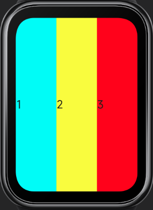

# 适配规范
Vela OS 支持一系列适配多种屏幕的技术能力。
# 自适应布局
系统提供的容器组件均默认遵循 Flex 弹性布局规则，使用弹性布局可以实现屏幕自适应布局。
比如以下代码可以实现行内多个 item 平均分布。
<div>
<text style="flex-grow: 1; background-color:aqua;">1</text>
<text style="flex-grow: 1; background-color:yellow;">2</text>
<text style="flex-grow: 1; background-color:red;">3</text>
</div>

更多说明请参考Flex 布局示例
# 自适应单位
在编写 UI 样式时，可以采用系统提供的自适应长度单位，包括：
- px
- %
# px
px 在 Vela 应用中不表示屏幕的物理像素，而是相对于项目配置基准宽度的单位，其原理类似于rem。
开发者在 manifest 文件中将 designWidth 字段配置为设计基准宽度（设计稿宽度），然后在样式描述中使用该长度单位，数值直接使用设计稿中的像素值，系统将自动计算使 Vela 应用 UI 在不同屏幕上进行等比缩放。
{
"config": {
"designWidth": 336
}
}
<template>
<div class="demo-page">
<div class="container"></div>
</div>
</template>
<style>
.demo-page {
justify-content: center;
align-items: center;
}
.container {
width: 168px;
height: 168px;
background-color: aquamarine;
}
</style>
如上示例中将 designWidth 配置为 336px，那么所有的 px 值使用都会按照 336px 的基准宽度换算。 假设设备屏幕实际宽度为 336 像素，则 container 元素的实际宽度也为 168 像素；如果设备屏幕实际宽度为 192 像素，则 container 元素的实际宽度为 96 像素。
336*480 屏幕 / 192*490 屏幕


更多说明请参考长度单位
# 百分比%
% 表示百分比，许多样式属性可以取百分比值，经常用以根据父对象来确定大小。
比如以下代码可以实现行内多个 item 按百分比占据父容器宽度，
<div>
<text style="width: 20%; background-color:aqua;">1</text>
<text style="width: 40%; background-color:yellow;">2</text>
<text style="width: 40%; background-color:red;">3</text>
</div>

更多说明请参考CSS 百分比单位 (opens new window)
# 固定长度单位3+
在有的布局场景下，需要使用固定长度单位，系统支持的 dp 长度单位可满足这个需求。
DP 长度单位表示设备独立像素（device-independent pixel），也叫密度无关像素，可以认为是计算机坐标系统中的一个点，这个点代表一个可以由程序使用的逻辑像素，是一个近似物理尺寸的单位，其计算公式为：
屏幕宽度的 DP 值 = 屏幕分辨率的宽度 / DPR
元素宽/高度的 DP 值 = 元素宽/高度的物理像素数 / DPR
DPR 表示设备像素比（device pixel ratio），是设备物理像素和逻辑像素（DP）的比值，其计算公式为：
DPR = 设备 PPI / 160
PPI（pixels per inch）表示每英寸的像素数，表征屏幕的物理密度，因此 DPR 又被称为逻辑密度。 设备屏幕的逻辑密度值（DPR）可以通过 device 接口获取。
比如以下代码可以实现元素在不同尺寸屏幕上保持近似的物理尺寸，从而在大屏幕上呈现更多的元素。
<template>
<div class="container">
<div class="text-box">
<text style="background-color: aquamarine;">
A
</text>
<text style="background-color: #ff0000;">
B
</text>
<text style="background-color: #00ff00;">
C
</text>
<text style="background-color: #0000ff;">
D
</text>
</div>
</div>
</template>
<style>
.container {
justify-content: center;
align-items: center;
}
.text-box {
justify-content: center;
flex-wrap: wrap;
}
text {
width:116dp;
height: 30dp;
font-size: 15dp;
text-align: center;
}
</style>
466*466 屏幕 / 192*490 屏幕


# 媒体查询
媒体查询是 CSS3 引入的一个功能，用于根据不同的屏幕尺寸和设备类型，为网页应用不同的样式。
在 Vela JS 应用中，也可以使用类似的媒体查询规范来针对不同屏幕和设备编写样式，详细介绍请参考媒体查询。
比如以下代码可以实现根据屏幕形状来应用不同的样式。
注意: 以下示例代码的designWidth为466
<template>
<div class="container">
<text>10:30</text>
<text>我的待办</text>
</div>
</template>
<style>
/* 当屏幕为圆形屏幕时 */
@media screen and (shape: circle) {
.container {
padding-left: 80px;
padding-right: 80px;
padding-top: 40px;
flex-direction: row;
align-items: flex-start;
justify-content: space-between;
}
text {
font-size: 40px;
}
}
/* 当屏幕为胶囊形屏幕时 */
@media screen and (shape: pill-shaped) {
.container {
padding-top: 50px;
flex-direction: column;
align-items: center;
}
text {
margin-top: 10px;
}
}
</style>
466*466 屏幕 / 192*490 屏幕


# 获取屏幕信息
在 Vela JS 应用中，可以通过 device feature 接口获取屏幕信息，包括屏幕形状、屏幕分辨率等。根据获取到的结果可以进行相应的样式适配。
比如以下代码可以实现根据屏幕形状决定 progress 组件的类型（是否是弧形）。
<template>
<div class="container">
<progress percent="80" type="{{progressType}}"></progress>
</div>
</template>
<script>
import device from '@system.device'
export default {
data: {
progressType: "horizontal"
},
onInit() {
const that = this
device.getInfo({
success: function(ret) {
that.progressType = ret.screenShape === "circle" ? "arc" : "horizontal"
}
})
}
}
</script>
<style>
.container {
padding: 20px;
}
</style>
圆形屏幕 / 矩形屏幕


详细介绍请参考 设备信息 device